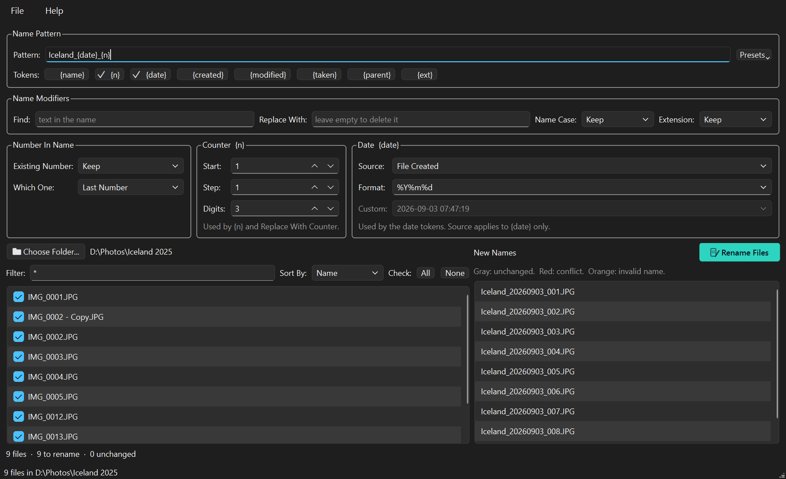
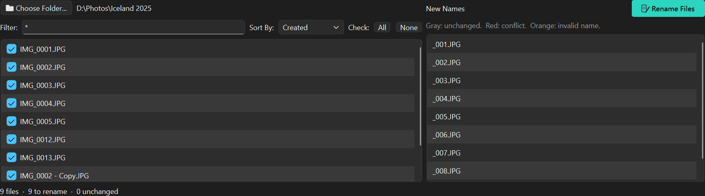
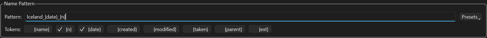
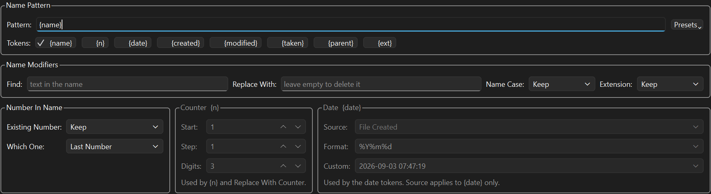
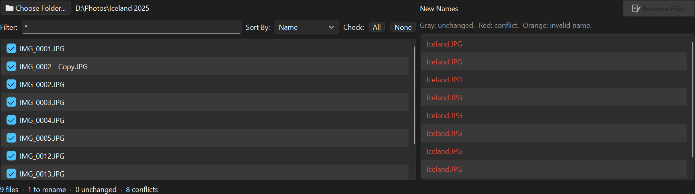
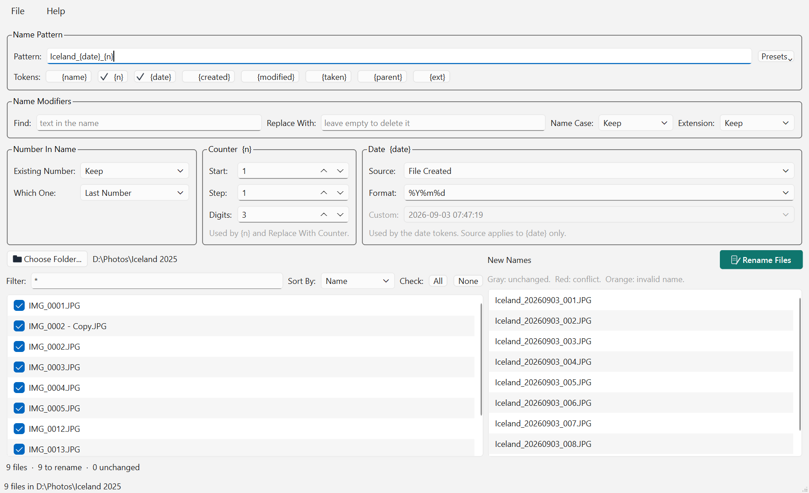

The File Rename Processing Workbench shows you every new name before a single file changes. Build the name from a pattern, watch the list on the right update as you type, and rename only when nothing collides.
Version 0.9.0 · Windows and macOS · free and open source · works entirely on your own machine

Selecting a hundred files and pressing F2 gives you photo (1).jpg through
photo (100).jpg. It cannot use the date a photo was taken, it cannot keep part of
the old name, and it cannot show you the result before it happens.
FRWB is built around the part Explorer leaves out: seeing what you are about to do. The left panel is the folder as it is now. The right panel is the same list of files under the name each one would get. Change anything above and the right panel redraws immediately.
Nothing is written until you press Rename Files, and that button stays greyed out while any two files would end up sharing a name. If the result is not what you wanted, one menu item puts every file back.
IMG_4821.JPG tells you nothing. Iceland_20250714_012.JPG sorts by
date and says where you were.
Strip the junk a scanner or a browser added, renumber the results from one, and pad the numbers so they sort correctly.
Files that sort as 1, 10, 11, 2 because nobody padded them. Renumber the whole set in one pass, in the order you choose.
Four steps, and you can stop at any of the first three without having changed anything.

Everything the application does, in the order you meet it.
Windows. Run frwbSetup-0.9.0.exe. It installs for your user
account only, so there is no administrator prompt and nothing lands in
Program Files. If you would rather not install anything, take the portable
zip instead, unpack it anywhere and run FRWB.exe from the folder.
macOS. Unzip and drag FRWB.app to Applications.
macOS will refuse it the first time. The app is not code-signed, which
needs a paid Apple Developer account this project does not have. Right-click the app and
choose Open — that dialog has a button the plain double-click does not.
Or clear the flag from a terminal: xattr -dr com.apple.quarantine FRWB.app.
Your settings live in your own user folder and are remembered between sessions: the last folder, the filter, the sort order and every naming setting.
Press Choose Folder… (or Ctrl+O). Only the files directly in that folder are listed; subfolders are not searched.
*.jpg; *.png keeps only those.
Press Enter to apply it.file2 comes before
file10. You can also sort by created date, modified date, or the date a
photo was taken.Press F5 if the folder changed behind the application's back.
The pattern is the new name, without its extension. Anything you type is kept exactly as typed, and anything in braces is replaced for each file.

| Token | Becomes |
|---|---|
{name} | The original name, after the Number In Name and Find steps |
{n} | The counter |
{date} | The date from the Date box, in its format |
{created} | The file's created date |
{modified} | The file's modified date |
{taken} | The photo's EXIF date, falling back to the modified date |
{parent} | The name of the folder |
{ext} | The original extension, without its dot |
Clicking a token button inserts it at the cursor. The buttons insert rather than
switch, which matters more than it sounds: a pattern is ordered and can hold text
of your own. {name}_{n} and {n}_{name} are different results from
the same two tokens, and Holiday_{n} puts a word you chose in front of every
file. Neither survives being reduced to eight on-off switches.
Presets offers ready-made patterns such as {name}_{n} or
{date}_{n}. Picking one fills the field and the ticks follow. A token you
misspell is left as typed, so you see it in the preview instead of losing it.
Changes made to the text itself, on either side of the pattern.
{name} picks up the
result. Leave Replace With empty to delete the text.Cameras and downloads number things: IMG_0042.jpg, Scan 12.pdf.
This box says what happens to that number.
| Existing Number | Result for IMG_0042 |
|---|---|
| Keep | IMG_0042 |
| Replace With Counter | IMG_001, IMG_002, … in list order |
| Replace With Date | IMG_20240102_030405 |
| Remove | IMG, taking the separator with it |
Which One picks the last or the first number when a name holds several,
as in 2024_pic_07.
Counter has a start, a step and a number of digits, so 3 digits gives
001. It runs in the order of the list and skips unticked files. The step can be
negative to count down, and it steps straight over zero, which would hand every file the
same name.
Date takes its Source from the file's created date, its modified
date, the photo's EXIF date, or a custom date and time you pick. The Format uses
the usual strftime codes: %Y year, %m month,
%d day, %H hour, %M minute, %S second.

The greying happens in stages, because these are not one switch:
| Control | Live when |
|---|---|
| The three counter controls | {n} is in the pattern, or Existing Number is Replace With Counter |
| Date Format | any date token is in the pattern, or Existing Number is Replace With Date. Every date token is printed through it |
| Date Source | {date} is in the pattern, or Existing Number is Replace With Date. The other date tokens name their own date, so there is nothing for Source to pick |
| Date Custom | Source is live and set to Custom Date/Time |
So a pattern of {created} leaves Format live and greys Source:
you can change how the date is printed, but not which date it is.
The right panel is colour-coded, and the line under the two lists counts each kind.
| Colour | Meaning |
|---|---|
| Normal | Will be renamed |
| Grey | Unchanged, or unticked |
| Red | Conflict. Two files would get the same name, or the name is already taken in the folder |
| Orange | Invalid. An empty name, or one the system reserves |

Hover any name for the reason. Rename Files stays disabled while a single conflict or invalid name remains, and takes colour the moment the batch can run.
Press Rename Files (Ctrl+R) and confirm. The work happens off the interface thread, so the window stays responsive on a large folder.
Renaming runs in two phases: every file first moves to a temporary name, then to its final one. That is what lets a batch swap two names, or renumber a series in place, without one rename overwriting a file the next one still needs. A file that unexpectedly cannot be renamed is reported and put back, never replaced.
File › Undo Last Rename (Ctrl+Shift+Z) returns every file in the last batch to its previous name. Only the most recent batch is kept.
Help › Theme chooses light, dark, or whatever your system is set to, which is the default. Every icon in the application is drawn twice so it reads on either.

Help › User Manual (F1) opens this manual on GitHub, and falls back to the copy inside the application when there is no network.
Something in the right panel is red or orange, or no name would actually change. Hover the button for the reason it gives.
Nothing in the new name uses them. Add {n} or a date token to the pattern, or
set Existing Number to replace with one. See
Counter and Date.
FRWB reads the date from JPEG and TIFF headers. Other formats, including HEIC and camera raw files, fall back to the file's modified date, and the preview says so when you hover the name.
A dialog lists each one and why. The usual cause is a file open in another application. Close it and press F5, then rename again.
File › Undo Last Rename, as long as you have not run a second batch over the top.
A renaming tool is trusted with a whole folder at once, so it is worth being explicit about the limits it works inside.
A file unexpectedly in the way is reported and the rename is rolled back, on every platform. It is never silently replaced.
The preview is produced by the same code that performs the rename, so what you read is what happens.
No account, no telemetry, no network. The only request it ever makes is checking whether the online manual is reachable, when you press F1.
Subfolders are not touched, and neither is anything you unticked.
Every applied rename is recorded so the whole batch can be put back in one step.
MIT licensed, and the full source is public, so anyone can check what it does with their files.
Free, no account, no ads, no telemetry. You do not need Python or anything else installed.
About 33 MB. Installs for your user only, so there is no administrator prompt. Adds a Start menu entry and an optional desktop shortcut.
Download for WindowsAbout 48 MB zipped. Nothing is installed: unpack it anywhere, including a USB stick,
and run FRWB.exe.
About 37 MB zipped. Unzip and move FRWB.app to Applications. See the
note about Gatekeeper before the first run.
Every link opens the GitHub release page — scroll to Assets and pick the file for your system. Each build is produced by a public workflow straight from the source, and checks itself before it is published.